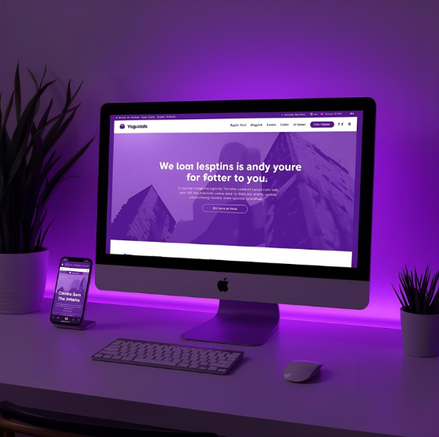

1. Psicologia das Cores: O Que Elas Dizem?
- Azul: Confiança, segurança, calma, inteligência (Ideal para tecnologia e finanças).
- Vermelho: Paixão, energia, urgência (Usado para chamadas à ação e alertas).
- Amarelo: Otimismo, clareza, calor (Pode ser usado como cor de destaque).
- Verde: Crescimento, saúde, natureza, tranquilidade.
2. Esquemas de Cores no Design
- O círculo cromático é seu melhor amigo. As principais harmonias são:
- Monocromática: Variações de saturação e brilho de uma única cor (ex: diferentes tons de azul). Cria um visual limpo e sofisticado.
- Complementar: Cores opostas no círculo (ex: Azul e Laranja). Alto contraste e impacto visual, ideal para destaques.
- Análoga: Cores vizinhas (ex: Azul, Azul-Verde, Verde). Cria um visual suave e agradável.
3. Use a regra 60-30-10 para Aplicação
- 60% Cor Dominante (Base): O fundo, cor principal do layout (ex: o azul escuro no nosso header).
- 30% Cor Secundária (Suporte):** Usada em sub-cabeçalhos e blocos de conteúdo (ex: o azul médio nos botões).
- 10% Cor de Acento (Destaque):** Usada para a chamada à ação (CTA) ou detalhes importantes (ex: o azul claro nos links e acentos).
Veja como a Cor Define a Identidade Visual